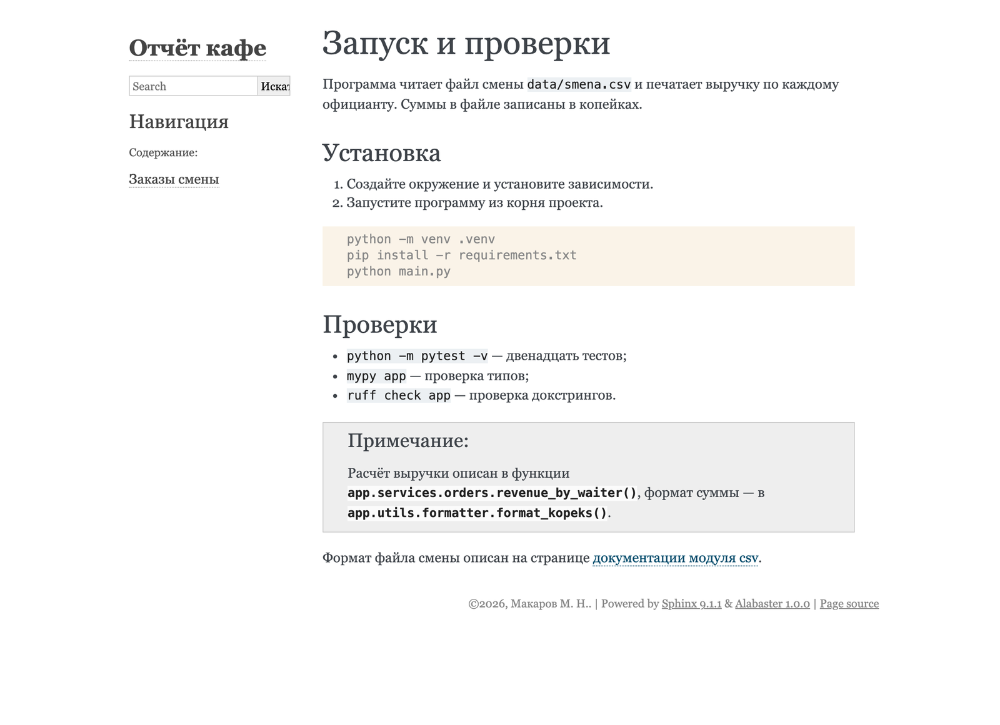
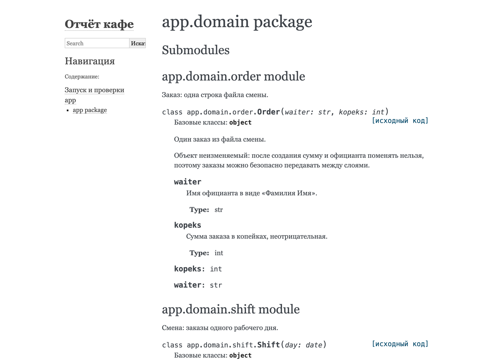
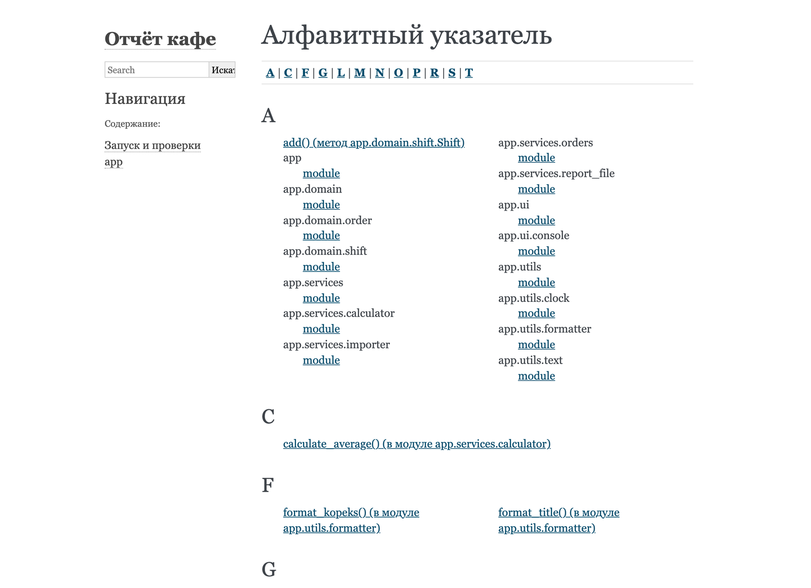
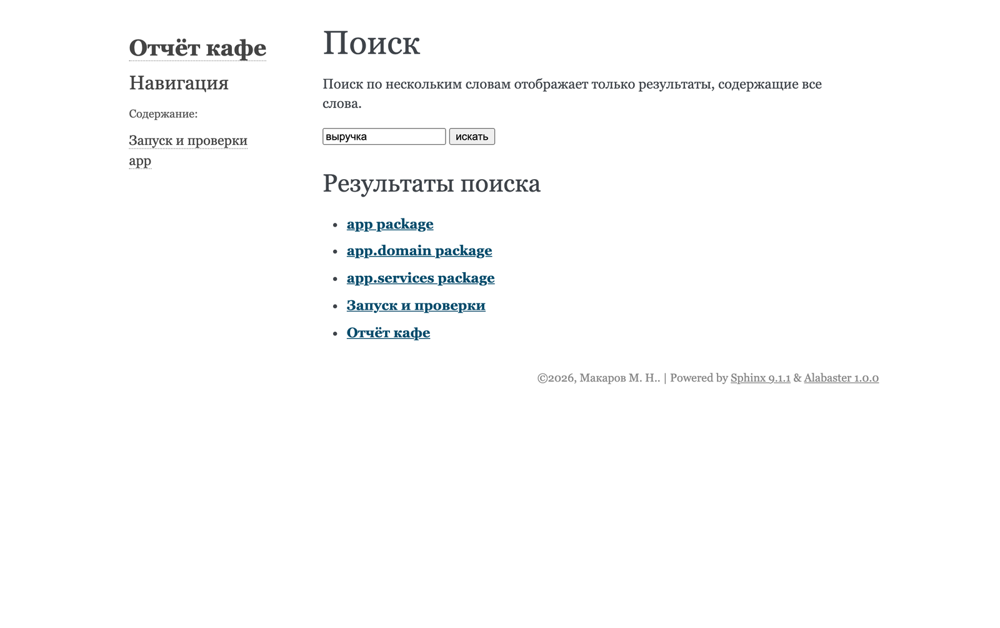

Аннотации типов и документация кода · МДК.01.01 · разработка программных модулей
Глава 4.14
Файлы .rst, automodule
и sphinx-apidoc
В этой главе сайт «Отчёта кафе» получает страницы двух видов. Первые пишут руками в разметке reStructuredText — на примере страницы о запуске и проверках разобраны заголовки, списки, блоки кода и ссылки на функции. Вторые создаёт программа sphinx-apidoc: по странице на каждый пакет, со всеми модулями. По дороге встречаются три предупреждения — страница вне оглавления, повторное описание объекта и устаревший файл — и для каждого показано исправление. В конце — задания.
- Категория
- Пошаговая работа
- Время
- Около 70 минут
- Инструменты
- reStructuredText,
sphinx-apidoc - Результат
- Сайт со страницей о запуске и всеми пакетами
app
Часть 1 · Страницы, написанные руками
§1Разметка reStructuredText по элементам
reStructuredText — разметка текста знаками, которые читаются и без обработки: заголовок подчёркнут чертой, пункт списка начинается со звёздочки, код выделен двойными обратными кавычками. Сборщик по этим знакам строит HTML. Похожим образом устроен Markdown в README; reStructuredText появился раньше и строже к разметке, и в нём есть директивы — команды сборщику вроде automodule и toctree.
Разбор идёт на странице, которую стоит иметь на сайте любого проекта: как его запустить и проверить. Сведения для неё взяты из README третьего архива.
Запуск и проверки ================= Программа читает файл смены ``data/smena.csv`` и печатает выручку по каждому официанту. Суммы в файле записаны в копейках. Установка --------- 1. Создайте окружение и установите зависимости. 2. Запустите программу из корня проекта. .. code-block:: console python -m venv .venv pip install -r requirements.txt python main.py Проверки -------- * ``python -m pytest -v`` — двенадцать тестов; * ``mypy app`` — проверка типов; * ``ruff check app`` — проверка докстрингов. .. note:: Расчёт выручки описан в функции :func:`app.services.orders.revenue_by_waiter`, формат суммы — в :func:`app.utils.formatter.format_kopeks`. Формат файла смены описан на странице `документации модуля csv <https://docs.python.org/3/library/csv.html>`_.

Каждый элемент страницы по отдельности:
| Элемент | Запись | Правило |
|---|---|---|
| Заголовок страницы | Запуск и проверки================= | Черта не короче текста. Вид черты задаёт уровень: первый встреченный в файле знак — первый уровень |
| Подзаголовок | Установка--------- | Другой знак черты — следующий уровень. В курсе: = для страницы, - для разделов |
| Абзац | строки подряд | Абзацы разделяются пустой строкой; перенос внутри абзаца на странице не виден |
| Код в строке | ``mypy app`` | Две обратные кавычки с каждой стороны |
| Нумерованный список | 1. … 2. … | Пустая строка перед списком и после него |
| Маркированный список | * … | То же; вместо * можно - |
| Блок кода | .. code-block:: console | Пустая строка после директивы, код с отступом в три пробела. Слово после :: — язык подсветки: python, console, toml |
| Врезка | .. note:: | Текст с отступом под директивой. Есть также .. warning:: и .. tip:: |
| Ссылка на функцию | :func:`app.….revenue_by_waiter` | Роль; разобрана в §3 |
| Внешняя ссылка | `текст <адрес>`_ | Подчёркивание после закрывающей кавычки обязательно |
В reStructuredText отступ определяет, к чему относится текст, как в Python тело функции. Строки под .. note:: с отступом входят во врезку, строка без отступа уже стоит после неё. Отступ должен быть одинаковым внутри блока; в курсе — три пробела, по длине .. .
§2Страница в оглавлении: toctree
Создать файл .rst мало. Sphinx соберёт из него страницу, но перейти на неё с сайта будет нельзя, и сборка об этом предупредит:
…/docs/source/usage.rst: WARNING: документ не включен ни в одно оглавление [toc.not_included]
Связи между страницами задаёт директива toctree. Она стоит в index.rst и перечисляет страницы, которые на сайте идут под главной. Порядок в списке — порядок в колонке «Навигация» и в кнопках «следующая» и «предыдущая».
.. toctree:: :maxdepth: 2 :caption: Содержание: usage orders
- Имена пишутся без
.rstи считаются от папкиdocs/source: файлdocs/source/api/modules.rstв оглавлении записывается какapi/modules. :maxdepth: 2— сколько уровней заголовков показывать в оглавлении на главной: заголовок страницы и её разделы.:caption:— подпись над списком.- Оглавление может стоять и на других страницах: так строится дерево. Страницы, которые создаёт
sphinx-apidoc, связаны именно так (§5).
§3Ссылки на функции: роли
Роль — разметка внутри строки: имя роли в двоеточиях и аргумент в обратных кавычках, :func:`имя`. Директива работает с блоком текста, роль — со словом. Роли для объектов Python создают ссылки на их описания на сайте.
| Роль | На что ссылается | Пример |
|---|---|---|
:func: | Функция | :func:`app.services.orders.load_orders` |
:class: | Класс | :class:`app.domain.order.Order` |
:meth: | Метод класса | :meth:`app.domain.shift.Shift.add` |
:mod: | Модуль | :mod:`app.utils.formatter` |
:exc: | Исключение | :exc:`ValueError` |
Роли работают и в докстрингах: фраза Сумма форматируется функцией :func:`app.utils.formatter.format_kopeks`. в докстринге станет ссылкой на сайте. В подсказке редактора и в help() роль останется текстом с двоеточиями, поэтому в докстрингах курса роли не обязательны.
Ссылка работает, если объект описан на сайте. Если имя написано с ошибкой или объект не выведен ни одной директивой, Sphinx при обычной сборке не предупреждает: на странице остаётся имя моноширинным шрифтом, без перехода. Найти такие места помогает ключ -n — строгий режим ссылок. Вот что он показывает, если в usage.rst написать format_rubles вместо format_kopeks, а на сайте описан только модуль orders:
<unknown>:1: WARNING: py:class цель перекрёстной ссылки не найдена: pathlib.Path [ref.class] <unknown>:1: WARNING: py:class цель перекрёстной ссылки не найдена: app.domain.order.Order [ref.class] <unknown>:1: WARNING: py:class цель перекрёстной ссылки не найдена: app.domain.order.Order [ref.class] <unknown>:1: WARNING: py:class цель перекрёстной ссылки не найдена: app.domain.order.Order [ref.class] …/docs/source/usage.rst:28: WARNING: py:func цель перекрёстной ссылки не найдена: app.utils.formatter.format_rubles [ref.func]
Последняя строка — искомая ошибка: файл, строка 28, имя, которого нет. Четыре строки выше — ссылки из подписей функций. Типы в аннотациях тоже становятся ссылками, и строгий режим сообщает, что для Path и Order описаний на сайте нет. Order появится на сайте после §5. Path описан в документации Python на другом сайте; ссылки на такие объекты создаёт расширение intersphinx, в курсе оно не используется. Поэтому -n запускают, чтобы найти опечатки в ссылках, а в постоянную сборку не включают.
§4Параметры automodule и директивы для одного объекта
В главе 4.13 у automodule был один параметр, :members:. Остальные определяют, что ещё попадёт на страницу.
| Параметр | Что добавляет | В курсе |
|---|---|---|
:members: | Функции и классы модуля, у которых есть докстринг | Да |
:undoc-members: | Также объекты без докстринга — одной подписью | Нет: публичное без описания Ruff и так не пропустит |
:private-members: | Также имена с подчёркиванием, например _parse_row | Нет: служебные функции не для читателя сайта |
:show-inheritance: | Строку «Базовые классы» у каждого класса | Нет: классы проекта наследуют только object |
:member-order: bysource | Порядок как в файле; по умолчанию — по алфавиту | По желанию |
Для одного объекта вместо модуля целиком используют autofunction и autoclass. Например, на странице о запуске можно показать описание одной функции прямо в тексте:
.. autofunction:: app.services.orders.revenue_by_waiter .. autoclass:: app.domain.shift.Shift :members:
Такой объект описан на сайте дважды, если его модуль выведен ещё и через automodule. Как Sphinx на это отвечает, видно в §6.
На сайте есть страница «Запуск и проверки» со ссылками на функции, она стоит в оглавлении. Страница «Заказы смены» описывает один модуль из десяти.
Писать automodule для каждого модуля руками долго, и при появлении нового модуля его легко забыть. Во второй части эти файлы создаёт программа.
Часть 2 · Страницы, созданные программой
§5sphinx-apidoc по шагам
sphinx-apidoc ставится вместе со Sphinx. Она проходит по папкам пакета, находит модули и для каждого пакета пишет файл .rst с директивами automodule. Докстринги сама программа не читает: это сделает autodoc при сборке. Её результат — заготовки страниц, такие же, как orders.rst, только для всех модулей.
Ассоциация: опись склада
Кладовщик обходит стеллажи и составляет опись: на каждый стеллаж — лист, на листе — перечень полок. Что лежит в коробках, он не смотрит, только подписывает, где какая коробка.
sphinx-apidoc обходит папки app: на каждый пакет — файл .rst, в нём директива automodule на каждый модуль. Содержимое модулей — докстринги — вынимает autodoc во время сборки.
Где не совпадаетОпись обновляют при каждом обходе. Файлы apidoc без ключа -f не перезаписываются: новый модуль в старый файл сам не попадёт (§7).
Запустите apidoc для пакета app
.venv/bin/sphinx-apidoc -o docs/source/api app.venv\Scripts\sphinx-apidoc -o docs/source/api app. Ключ -o — папка для файлов, последний аргумент — папка пакета. Файлы складываются в отдельную папку api, чтобы не смешиваться со страницами, написанными руками.
Версия 9.1.1 ничего не печатает. Проверьте папку: ls docs/source/apidir docs\source\api.
app.domain.rst app.rst app.services.rst app.ui.rst app.utils.rst modules.rst
Файл на каждый пакет: app и четыре вложенных. modules.rst — корень этого дерева, оглавление с одним пунктом app.
Прочитайте файл одного пакета
app.services package ==================== Submodules ---------- app.services.calculator module ------------------------------ .. automodule:: app.services.calculator :members: :show-inheritance: :undoc-members: app.services.importer module ---------------------------- …
Те же директивы, что в главе 4.13, по одной на модуль, с заголовком второго уровня. В конце файла — раздел Module contents с докстрингом самого пакета из __init__.py. Заголовки на английском: их пишет программа.
Включите дерево api в оглавление
Без этого сборка напечатает документ не включен ни в одно оглавление для api/modules.rst — то же предупреждение, что в §2. В index.rst замените строку orders на api/modules, а файл orders.rst удалите: модуль orders теперь описан на странице пакета app.services.
.. toctree:: :maxdepth: 2 :caption: Содержание: usage api/modules
Если orders.rst оставить, функции модуля окажутся описаны на двух страницах, и сборка выдаст по предупреждению на каждую: повторное описание объекта app.services.orders.load_orders, другой экземпляр в orders. Одно описание объекта на сайте — правило Sphinx: ссылка :func: должна вести в одно место.
Соберите всё заново
sphinx-build -M html docs/source docs/build -q -E. Ключ -E нужен: страница orders удалена, и в окружении от прошлой сборки остались её объекты.
<unknown>:1: WARNING: повторное описание объекта app.domain.order.Order.kopeks, другой экземпляр в api/app.domain, используйте :no-index: для одного из них <unknown>:1: WARNING: повторное описание объекта app.domain.order.Order.waiter, другой экземпляр в api/app.domain, используйте :no-index: для одного из них
Осталось два предупреждения, и оба внутри одной страницы api/app.domain: поля kopeks и waiter класса Order описаны дважды. Разбор — в следующем параграфе.
§6Повторное описание и поля dataclass
Класс Order — dataclass с двумя полями. Его докстринг в формате Google описывает поля в разделе Attributes:, как в главе 4.9. Описание попадает на страницу двумя путями:
- napoleon переводит раздел
Attributes:в описания атрибутовkopeksиwaiter; - параметр
:undoc-members:, который apidoc ставит по умолчанию, выводит поля класса ещё раз — по их аннотациямkopeks: intиwaiter: str, хотя докстрингов у них нет.

api/app.domain после первой сборки. Под описанием класса стоит строка «Базовые классы: object» — это параметр :show-inheritance:. Поля описаны с текстом из раздела Attributes:, а ниже повторены одной подписью kopeks: int, waiter: str.Переведите Attributes в поле класса
Добавьте в conf.py к настройкам napoleon:
napoleon_google_docstring = True napoleon_numpy_docstring = False napoleon_use_ivar = True
С napoleon_use_ivar = True раздел Attributes: становится полем «Переменные» в описании класса, как «Параметры» у функции, и отдельных объектов-атрибутов не создаёт. Повторять нечего, и сборка с -q -E проходит без вывода.
Пересоздайте файлы apidoc только с :members:
Предупреждений больше нет, но строки kopeks: int, waiter: str и «Базовые классы: object» на странице остались. Их выводят параметры :undoc-members: и :show-inheritance:. Набор параметров для всех файлов задаётся переменной окружения SPHINX_APIDOC_OPTIONS:
SPHINX_APIDOC_OPTIONS=members .venv/bin/sphinx-apidoc -f -M -o docs/source/api app$env:SPHINX_APIDOC_OPTIONS = "members"; .venv\Scripts\sphinx-apidoc -f -M -o docs/source/api app
SPHINX_APIDOC_OPTIONS=members— у каждой директивы будет один параметр:members:. Запись перед командой задаёт переменную только для этого запуска.В PowerShell переменная задаётся отдельной командой и действует до закрытия терминала.-f— перезаписать существующие файлы. Без него apidoc оставит прежние файлы как есть (§7).-M— докстринг пакета ставить в начало страницы, перед модулями.
У программы есть ключ --automodule-options с тем же назначением. В Sphinx 9.1.1 он разбирается, но на файлы не влияет: проверено, что после --automodule-options members в файлах остаются все три параметра. Поэтому в курсе используется переменная окружения.
Соберите и проверьте страницу пакета
sphinx-build -M html docs/source docs/build -q -E — вывод пуст.

app.domain: сверху докстринг пакета «Объекты предметной области: заказ и смена.», у класса Order поля описаны один раз — в поле «Переменные», с типами из аннотаций. Строки «Базовые классы» нет.§7Повторный запуск apidoc
Файлы в docs/source/api — снимок состава пакета на момент запуска. Когда в проекте появляется, переименовывается или удаляется модуль, их нужно создать заново. Без ключа -f программа существующие файлы не трогает и ничего об этом не сообщает. Последствия видны только при сборке:
| Что изменилось в app | Запуск без -f | Запуск с -f |
|---|---|---|
| Добавлен модуль | Модуля нет на сайте, предупреждений нет | Модуль на странице пакета |
| Удалён модуль | Директива для него осталась: failed to import при сборке | Директивы нет |
| Добавлен пакет | Создан новый файл пакета, но в оглавление родителя он не попал: документ не включен ни в одно оглавление | Файл создан и стоит в оглавлении |
Поэтому файлы apidoc меняют только повторным запуском команды: при следующем запуске с -f ручные правки пропадут. Если на странице пакета нужен свой текст, его пишут в докстринге пакета в __init__.py — он выводится в начале страницы. Команду запуска удобно записать в README проекта, чтобы её не приходилось вспоминать.
С параметром :members: на сайт попадают только функции с докстрингом. Функция без описания пропускается молча — её нет ни на странице, ни в предупреждениях. Найти такие места помогает Ruff из главы 4.10: правило D103 отмечает публичную функцию без докстринга. Поэтому перед сборкой сайта проверка ruff check app должна проходить.
§8Указатель и поиск
Две страницы Sphinx строит без файлов .rst, по всем описанным объектам: алфавитный указатель и поиск. Ссылка на указатель стоит на каждой странице сайта, поле поиска — в боковой колонке.


searchindex.js.Страницы всех пакетов app созданы командой SPHINX_APIDOC_OPTIONS=members sphinx-apidoc -f -M -o docs/source/api app и подключены в оглавление строкой api/modules. В conf.py добавлено napoleon_use_ivar = True. Сборка с -q -E проходит без предупреждений.
Сайт пока в теме alabaster и открывается только с диска. Глава 4.15 меняет тему и выкладывает сайт в интернет.
§9Соберите сами
Команды записаны коротко, для терминала с активированным окружением; в Windows переменную SPHINX_APIDOC_OPTIONS задают отдельной командой, как в §6. Сборку запускайте с -q -E: тогда в выводе только предупреждения, и Sphinx перечитывает все модули.
Соберите сами · страницы и apidoc
Пять опытов: своя страница, страница вне оглавления, битая ссылка, новый модуль и удалённый модуль. Ожидаемые результаты проверены на третьем архиве.
Страница о запуске
- Создайте
docs/source/usage.rstс текстом из §1. Текст лучше набрать вручную: так запоминаются отступы. - Добавьте
usageпервой строкой в оглавлениеindex.rst. - Соберите и откройте страницу «Запуск и проверки».
Вывод пуст, страница выглядит как на кадре в §1. Имена функций в блоке «Примечание» ведут на их описания: щёлкните по revenue_by_waiter() — откроется страница пакета app.services на нужной функции.
Если команды показаны обычным текстом без серого блока
После строки .. code-block:: console нужна пустая строка, а сами команды — с отступом. Если пустой строки нет, Sphinx считает команды аргументами директивы и печатает ERROR: Error in "code-block" directive: maximum 1 argument(s) allowed, 11 supplied. — одиннадцать слов в трёх командах.
Страница вне оглавления
- Уберите
usageиз оглавления и соберите. - Откройте в браузере адрес страницы напрямую:
docs/build/html/usage.html. - Верните строку.
Предупреждение …/docs/source/usage.rst: WARNING: документ не включен ни в одно оглавление [toc.not_included]. Страница собрана и по прямому адресу открывается, но в «Навигации» её нет, и с главной на неё не попасть.
Битая ссылка
- В
usage.rstзаменитеformat_kopeksнаformat_rubles. - Соберите с
-q -E, затем с-q -E -n. - Верните правильное имя.
Обычная сборка ничего не печатает. На странице format_rubles() показано моноширинным шрифтом, но не подчёркнуто и никуда не ведёт. Сборка с -n печатает восемь строк. Последняя — искомая: usage.rst:28: WARNING: py:func цель перекрёстной ссылки не найдена: app.utils.formatter.format_rubles. Пять строк — типы из стандартной библиотеки в аннотациях: datetime.date, pathlib.Path, collections.abc.Iterator; они описаны в документации Python, на сайте проекта их нет. Ещё две строки начинаются с docstring of app.utils.formatter.format_kopeks и содержат куски текста «Строка вида «1 250» и «00 ₽»». Эти две строки указывают на ошибку в докстринге, которую обычная сборка не показывает. Её разбор — в главе 4.16.
Новый модуль
- Создайте
app/utils/percent.pyс докстрингом модуля и двумя функциями:share(part: int, total: int) -> floatс докстрингом по формату Google иrounded(value: float) -> intбез докстринга. - Соберите сайт без запуска apidoc и найдите модуль на странице пакета
app.utils. - Запустите apidoc с
-f -MиSPHINX_APIDOC_OPTIONS=members, соберите ещё раз. - Запустите
ruff check app/utils/percent.py.
После шага 2 модуля на сайте нет, предупреждений тоже нет. После шага 3 на странице app.utils появился раздел app.utils.percent module с функцией share. Функции rounded на сайте нет. Ruff на шаге 4 отмечает её правилом D103 Missing docstring in public function. Допишите докстринг, соберите — функция появится.
Удалённый модуль
- Удалите
app/utils/percent.py. - Запустите apidoc без
-fи соберите. - Запустите apidoc с
-fи соберите ещё раз.
После шага 2 в файле docs/source/api/app.utils.rst осталась директива для app.utils.percent, и сборка печатает WARNING: autodoc: failed to import 'percent' from module 'app.utils' с последней строкой ModuleNotFoundError: No module named 'app.utils.percent'. После шага 3 директивы нет, вывод пуст.
§10Проверьте себя
Чем директива отличается от роли?
Директива — блок: строка .. имя:: и текст или параметры под ней с отступом. Роль — разметка внутри строки: :func:`имя`.
Страница собрана, но в навигации её нет. Что проверить?
Стоит ли имя файла без .rst в каком-нибудь toctree. Сборка в этом случае печатает документ не включен ни в одно оглавление.
Почему опечатку в :func: обычная сборка не находит?
Ссылка на неописанный объект не считается ошибкой: Sphinx показывает имя без перехода. Такие места находит сборка с ключом -n.
Что делает sphinx-apidoc и чего не делает?
Создаёт файлы .rst с директивами automodule — по файлу на пакет. Докстрингов не читает и сайт не собирает: это делают autodoc и sphinx-build.
Откуда берётся «повторное описание объекта Order.kopeks» и как его убрать?
Поле описано разделом Attributes: через napoleon и ещё раз параметром :undoc-members:. Настройка napoleon_use_ivar = True переводит Attributes: в поле «Переменные», и повтор пропадает. Файлы apidoc с одним :members: убирают и подписи полей без описания.
Зачем ключ -f при повторном запуске apidoc?
Без него существующие файлы не перезаписываются: новые модули не попадут на сайт, а удалённые дадут failed to import.
Страница / =====
Раздел / -----
``код``
`текст <адрес>`_
:func:`app.….имя`
.. code-block:: console
.. note::
.. toctree::
usage
api/modules
SPHINX_APIDOC_OPTIONS=members
sphinx-apidoc -f -M -o docs/source/api app
-n — битые ссылки
napoleon_use_ivar = True
Итог главы
Страницы сайта пишут в разметке reStructuredText: заголовок подчёркивают чертой, код в строке берут в двойные обратные кавычки, блоки задают директивами code-block и note, ссылки на функции — ролями :func: и :class:. Страница видна на сайте, только если её имя стоит в директиве toctree. Ссылка на неописанный объект при обычной сборке молча остаётся текстом; найти её помогает ключ -n. Директива automodule по параметрам выводит функции с докстрингами, объекты без описания, служебные имена и базовые классы; в курсе оставлен один :members:. Файлы с директивами для всех пакетов создаёт sphinx-apidoc; в курсе её запускают с SPHINX_APIDOC_OPTIONS=members и ключами -f -M после каждого изменения состава модулей. Поля dataclass описываются один раз, если включить napoleon_use_ivar. Следующая глава — тема оформления и публикация сайта на GitHub Pages.
- Разметка reStructuredText — Sphinx, reStructuredText Primer.
- Директивы
toctree,code-block,note— Sphinx, Directives. - Роли для объектов Python — Sphinx, The Python Domain.
- Параметры
automodule— sphinx.ext.autodoc;napoleon_use_ivar— sphinx.ext.napoleon. - Ключи и переменная окружения программы — sphinx-apidoc.
- Выводы, поведение ключа
--automodule-optionsи кадры проверены на Sphinx 9.1.1 сценариемshots/sphinx_run.py.